RAMBO (hazma.rambo)¶
- Author - Logan A. Morrison and Adam Coogan
- Date - December 2017
Functions¶
| Computing annihilation cross sections | hazma.compute_annihilation_cross_section |
| Computing decay widths | hazma.compute_decay_width |
| Computing energy histograms | hazma.generate_energy_histogram |
| Computing a single relativistic phase space point | hazma.generate_phase_space_point |
| Computing many relativistic phase space points | hazma.generate_phase_space |
Description¶
Sub-package for generating phases space points and computing phase space integrals using a Monte Carlo algorithm called RAMBO. This algorithm was originally implemented by [1].
This algorithm starts by generating random, massless four-momenta 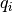
with energies distributed according to 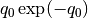. These
‘s are then transformed into  ‘s by boosting the
‘s into the center-of-mass frame so that
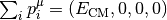. Lastly, the
‘s are rescaled into
‘s by boosting the
‘s into the center-of-mass frame so that
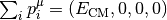. Lastly, the
‘s are rescaled into  ‘s so that the ‘s
give the correct masses.
‘s so that the ‘s
give the correct masses.
Details¶
The RAMBO algorithm can be broken up into four steps:
- Randomly generate
 massless four-momenta:
massless four-momenta:  .
. - Boost the set into
 .
. - Transform the set into .
- Compute the weight of the phase space point.
Repeating these steps many times will generate the phase space.
Generating the ¶
The first step is to generate the set , where
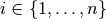 and is the number of final state particles.
The ‘s will have energies distributed according to
and will be massless. Additionally, the
‘s will be unphysical, i.e. will not have the correct
center-of-mass energy. To generate the , we first compute
 uniform random numbers, 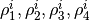, on the interval
uniform random numbers, 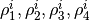, on the interval  . Then, we compute
the following:
. Then, we compute
the following:
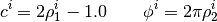
Then, the components of will be:

Generating the ¶
Next, the ‘s need to be boosted to generate the
‘s. This is done using the following:

where

Here,  is a four-vector equal to the sum of the ‘s,
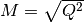 and
is a four-vector equal to the sum of the ‘s,
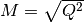 and  is the relativistic boost
factor.
is the relativistic boost
factor.
Generating the ¶
At this point, we have the ‘s, which are four-momenta with the
correct center of mass energy, but which are still massless. Our next, step is
to transform the ‘s into ‘s, which have the
correct masses.
In order to get the correct masses, we need to rescale the ‘s.
This is done as follows:

where  is the scaling factor. To compute the scaling factor, we
require that the sum of the 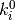‘s gives the correct
center-of-mass energy. That is, that satisfies:
is the scaling factor. To compute the scaling factor, we
require that the sum of the 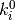‘s gives the correct
center-of-mass energy. That is, that satisfies:
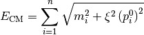
Thus, to compute the ‘s, we solve for an then
rescale the ‘s according to the above transformations.
Compute the phase space weight¶
The last step is to compute the phase space weight. The weights are such that, when summing over all phase space points, weighted by the weights, we get the correct phase space volume. The phase space weight is given by